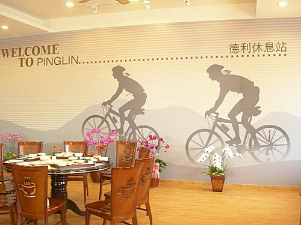
環島第六天
礁溪三光溫泉旅店--二城--北宜公路--石牌（最
高點538M ）--碧湖--坪林（午餐）--風露嘴--二
格公園--新店─上補給車至桃園觀音鄉1213民宿（今日總里程65公里 ）
撐到今天已經第六天了，多數隊員從第三天起即有二個困擾，一是大腿酸痛，另外則是屁股疼痛。
超哥所攜帶BENGAY酸痛軟膏，於是成了大家的最愛，每天晚上洗澡後，及一早出發前，先BENGAY一下，成了大家一天重要的儀式。
單車環島平均一天約騎110公里 ，一天坐在單車上時間超過6個小時，若不是有超強的「鐵屁股」，屁股痛可能成為難以避免的症狀。
駕補給車隨行的吳 師傅 教授大家騎乘秘訣----立股盆且雙膝內八踩踏騎乘，此種正確的騎乘，給大家屁股痛症狀帶來很大的改善--真是遇上貴人。
另外單車學校 謝校長 教授的蛤蟆功亦不錯（除可使肌肉消除疲勞外，也可讓臀部內側通風散熱及暢通血行），每當中途休息時，我們不是搶坐路邊椅子休息，而是一群人蹲在路旁練蛤蟆功，畫面真是有趣。
疲憊的身軀，洗滌礁溪溫泉後，一夜好眠。早上出發前，照例在飯店門口集合留影，投宿的「三光飯店」，雖然比兩光飯店只多一光，但二張大床的二人房，附加溫泉泡湯設施只要1320元，對環島車友來說真是經濟實惠，值得推薦。
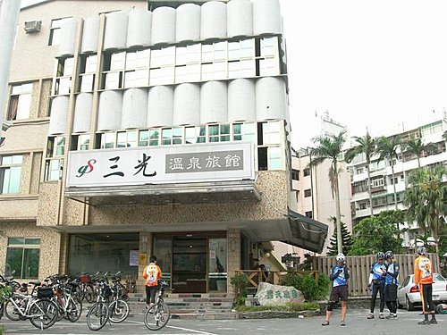
宜蘭到台北最近的路線，即是台9線的北宜公路，全長約60公里 。自從北宜高速公路通車後，這條迂迴在崇山峻嶺間的北宜捷徑，便成單車客的最愛。
從二城進入北宜公路後，沒多久即為長爬坡之九彎十八拐路段，180度之髮夾彎折騰下來，還真是讓人揮汗如雨呢。停下來看看可愛的龜山島，休息一下，再往前衝吧！
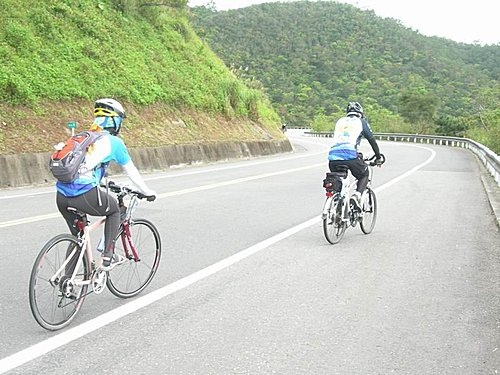
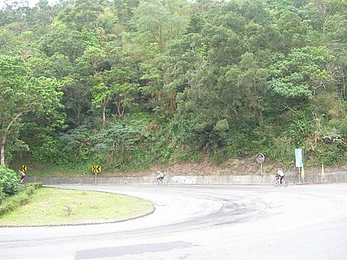
@美麗的髮夾彎，爬起來，頗為辛苦
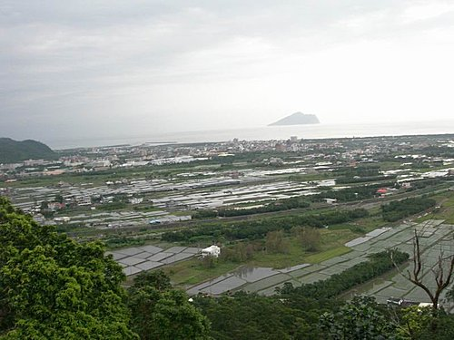
@遠眺龜山島及蘭陽平原之散村聚落
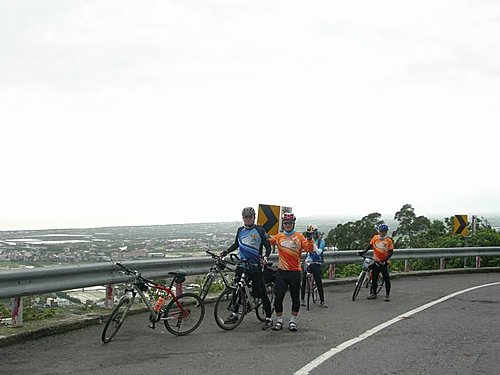
從二城至北宜公路最高點石牌5百多公尺，13公里 的長爬坡，9個人很快的就區分成領先的主集團4人，在爭奪今日之爬坡王，及墊後從容賞景的次主集團5人（講從容賞景是比較含蓄的說話，實情係….，自不待言），從上面這張照片各位就知誰
再爭奪爬坡王了吧（爭奪者，未有時間入鏡）。
次主集團以伴隨龜山島的龜速終於花了二小時到達石牌最高點（平均時速6.5公里 ），大家看到路旁的茶葉蛋及豬血湯的招牌，不禁動容，因為整個環島近千公里的里程最高點，在大家努不懈的堅持下，終於成功踩踏攻頂，喝個熱湯，打個牙祭，犒賞慶祝一下自己，這才是賞罰分明嗎。
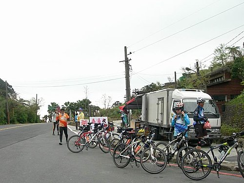
登上石牌的觀景亭，上面斗大巨石上刻著「金面大觀」四字，碑文依稀記述：
「山開金面石牌崇，俯瞰蘭陽入眼中。北宜公路最高點高538公尺 ，即北宜兩縣交界之處。在晴空萬里之際，可俯看整個蘭陽平原及散村景觀，太平洋上龜山島載浮載沈的特別地景，若遇雨霧漫天，即令人產生一股屬於蘭陽特有的氤氳與縹緲感受，各種獨特的自然景觀風貌，相當壯麗。由於景觀氣勢萬千，1954年被選定新蘭陽八景之一。」
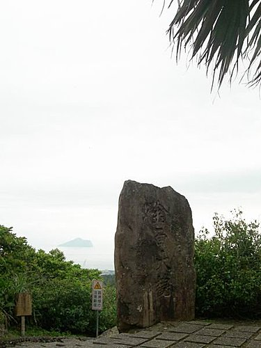
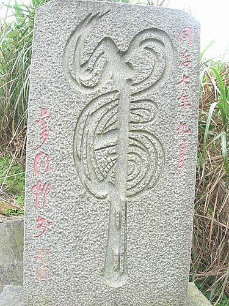
@石牌最高點與草嶺古道同，立有一小一號的虎字碑
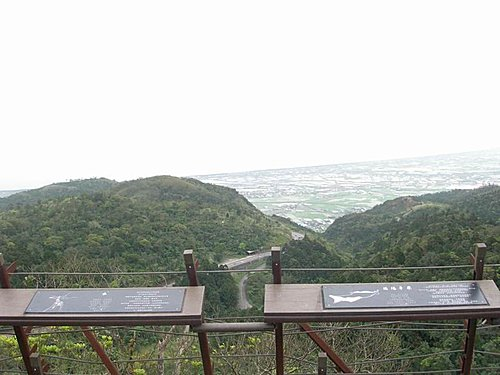
@從北宜最高點（約550公尺）看九彎十八拐及龜山島（下）
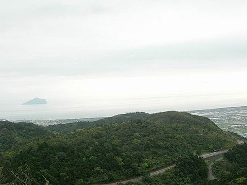
從石牌經碧湖至坪林約19公里 路程，立刻可享受剛剛辛苦努力爬坡的回饋，長下坡免踩踏的飆速行駛，疾風而行，真是令人爽快。但說實話，車友皆知下坡路段，事實上雖是最暢快的行程，然也是最危險的路段。
所幸，大家都能僅記小紀隊長的叮嚀：「安全，是河東獅環島之行，唯一的準則」，轉眼間，大家都已平安順利滑行至坪林拱橋了。原本計劃先至橋下的親水公園觀魚賞鳥，因突然下起雨來，只好先至德利茶行為自行車友所專闢之德利休息站，喝茶用餐囉。
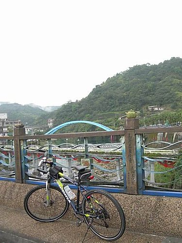
@坪林新親水公園之拱橋
德利休息站，除了提供自行車專屬停車架外，亦免費提供淋浴設施，舒適的休息空間，與老闆閒談之後，原來老闆也是車友同好，所以造訪其間，處處貼心的設施及服務，真是車友聚會補給的好所在。
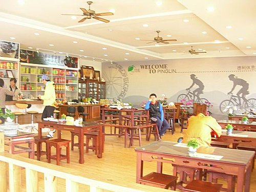
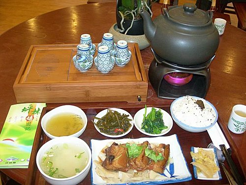
@180元的元氣套餐（附熱茶、甜點），讓人看了食指大動
用餐期間，雨勢突然又大了起來，前幾天的雨中騎乘經驗，全身淋得溼搭搭的，身體在不斷的用力踩踏下，卻冒煙衝出熱氣，雖是神奇，但其中滋位卻不好受，如非身歷其境，實難體會。
這時，大家不免又動搖意志，討論是否要坐上補給車？每到這種意見紛岐的緊要關頭，經小獅向最高當局小紀隊長請示結果，答案總是：「我可以騎乘，開放自行決定是否上補給車」，標準答案批示下來，大家總是心想：小紀隊長如此年紀都可騎了，於是大家只好硬著頭皮穿上雨衣繼續埋頭苦幹吧！
所幸，經小紀隊長的正向思考及念力禱告後，於要出發之際，雨突然又停了。大家遂奮力繼續今日未完成的27公里 的山路行程。
途中，多處經過廟宇及阿彌佛陀神像前，後段班的超哥、小揚及我，便一路虔誠的膜拜，祈求上天不要再下雨，賜給我們好天氣。說也神奇，在我們逢廟必拜下，一路到新店出北宜公路，竟然真的未再下雨。真是心誠則靈。
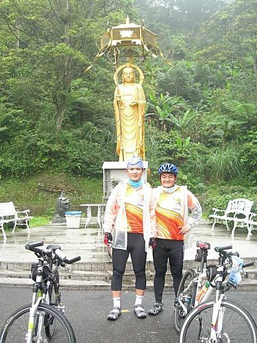
@逢廟必拜讓天氣變好的幕後功臣
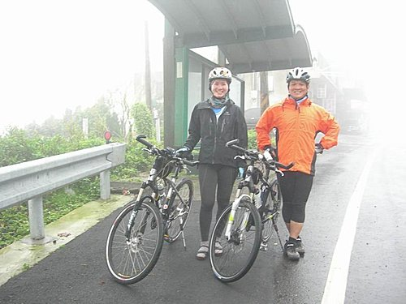
@午後的北宜公路，真的是騎乘於氤氳霧氣之中
晚上，於桃園觀音1213民宿用餐，因小揚另有要事，要先行脫隊返回高雄，於是大家開了一瓶麥卡倫威士記幫他送行，感謝他陪同騎乘東部近600公里 汗雨交織的里程。
酒酣耳熱之際，與民宿老闆閒話家常，問起為何民宿取名為「1213」，老闆指著牆上伊姓名說，其姓「邱」之筆劃看起來即是1213，其因而引以為店名，聽了不禁令人莞爾。
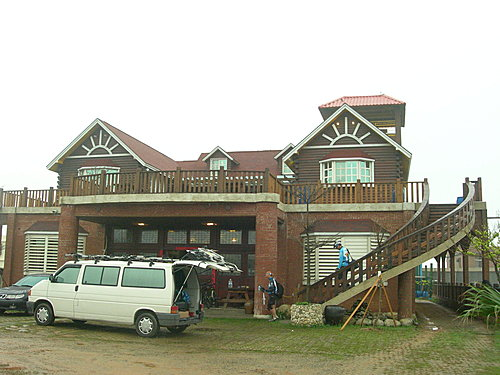
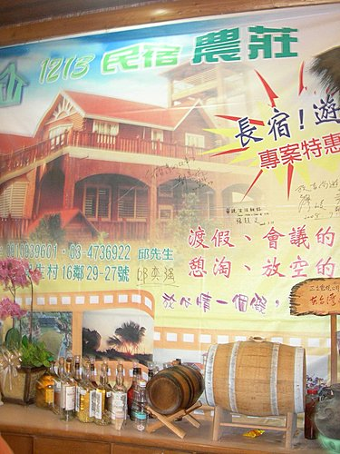
從此，本隊的邱兄，亦多了一個新綽號「1213」，各位讀者，您應該知道是誰吧，就是今日相片中最白嫩、最帥的那一個喲。
（未完）……敬請期待更精彩的第7日行程…………